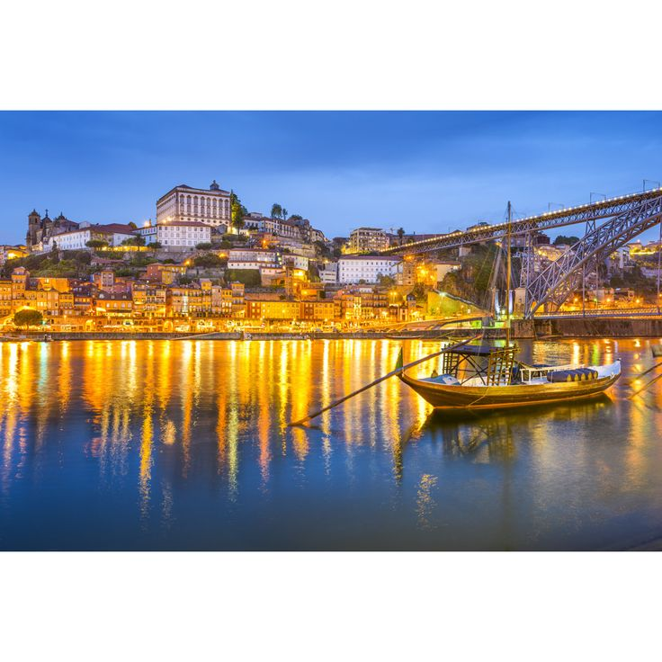

Simple Routes
Choose routes based on distance, difficulty, and the type of run you want to complete.

Find beginner-friendly routes, scenic paths, and practical safety tips for running around Porto.
Explore RoutesYou have visited this guide time(s) from this browser.
Choose routes based on distance, difficulty, and the type of run you want to complete.
Learn basic preparation tips such as hydration, visibility, and choosing safer paths.
The guide is focused on Porto and highlights running ideas around the river, parks, and viewpoints.